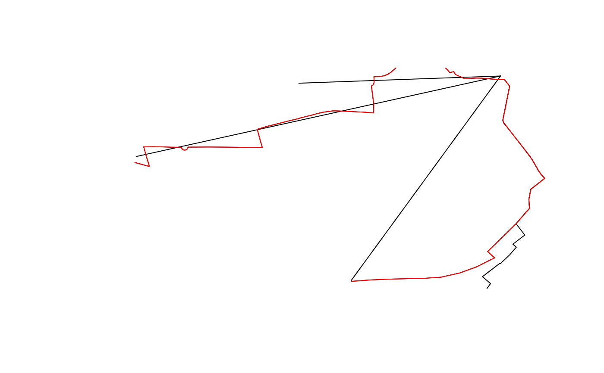

This function is a wrapper around gDistance that matches lines based on the Hausdorff distance
line_match(l1, l2, threshold = 0.01, return_sp = FALSE)
Arguments
| l1 | A spatial object |
|---|---|
| l2 | A spatial object |
| threshold | The threshold for a match - distances greater than this will not count as matches |
| return_sp | Should the function return a spatial result (FALSE by default) |
See also
Other lines: angle_diff,
geo_toptail, is_linepoint,
line2df, line_bearing,
line_midpoint, line_sample,
line_segment, line_via,
mats2line, n_sample_length,
n_vertices, onewaygeo,
onewayid, points2line,
toptail_buff, toptailgs,
update_line_geometry
Examples
#> [1] NA 1 2l1 <- flowlines[2:4, ] l2 <- routes_fast[3:5, ] (lmatches <- line_match(l1, l2)) # how the stplanr version works#> Warning: Spatial object 1 is not projected; GEOS expects planar coordinates#> Warning: Spatial object 2 is not projected; GEOS expects planar coordinates#> [1] NA 1 2l2matched2 <- line_match(l1, l2, return_sp = TRUE)#> Warning: Spatial object 1 is not projected; GEOS expects planar coordinates#> Warning: Spatial object 2 is not projected; GEOS expects planar coordinates#> [1] FALSE# decreasing the match likelihood via the threshold line_match(l1, l2, threshold = 0.003)#> Warning: Spatial object 1 is not projected; GEOS expects planar coordinates#> Warning: Spatial object 2 is not projected; GEOS expects planar coordinates#> [1] NA 1 NA